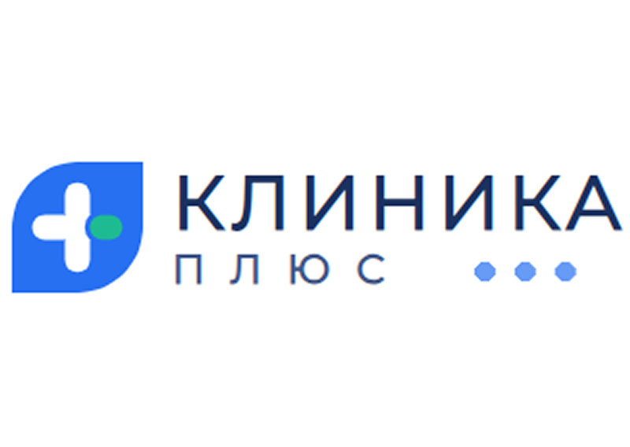
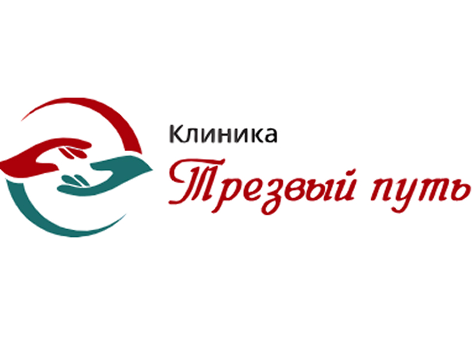
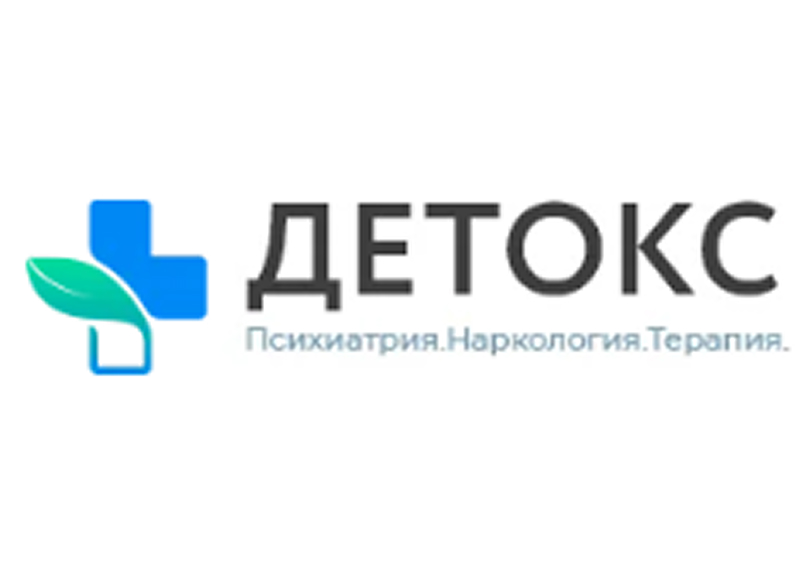
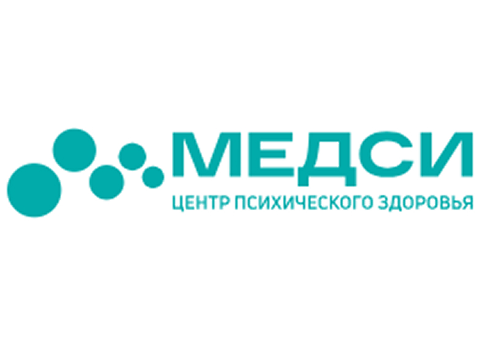
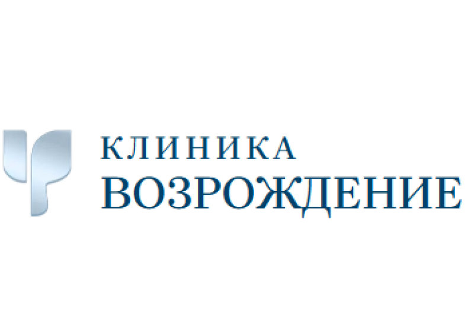
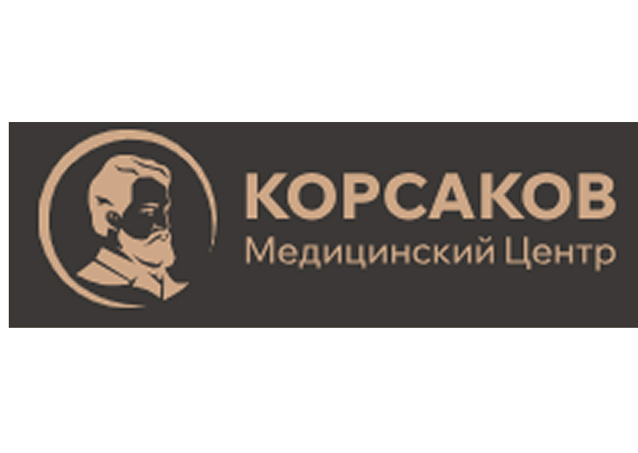
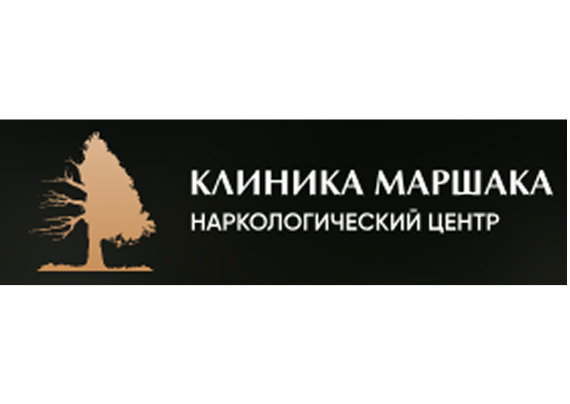

Лучшие наркологические клиники России — независимый рейтинг 2026
Независимый рейтинг лучших наркологических клиник России 2026 года. Проверяем лицензии Минздрава, анализируем реальные отзывы пациентов, сравниваем цены на лечение алкоголизма и наркомании. Публикуем прямые контакты медицинских центров — без скрытых комиссий и наценок.
-

🏆 1 местоКлиника Плюс
Многопрофильный медицинский центр с сильным наркологическим отделением. Специализируется на комплексном лечении алкогольной и наркотической зависимости с использованием современных протоколов детоксикации и реабилитации.
Популярные услуги и цены:Вывод из запоя на домуот 4 500 ₽Стационарная детоксикацияот 6 500 ₽Кодирование Эсперальот 6 800 ₽Консультация наркологаот 2 000 ₽Капельница двойного очищенияот 5 200 ₽Снятие алкогольного психозаот 8 500 ₽ -
 🏆 2 место
🏆 2 местоКлиника доктора Калюжной
Частная наркологическая клиника в Краснодаре, специализирующаяся на комплексном лечении алкогольной, наркотической и поведенческих зависимостей. Учреждение применяет классические методы терапии в сочетании с современными протоколами детоксикации и кодирования. Все медицинские процедуры проводятся с полным соблюдением врачебной тайны — данные пациентов не передаются в государственные органы. При клинике действует круглосуточная мобильная бригада для экстренных выездов на дом.
Основные услуги и стоимость:Индивидуальный сеанс психотерапииот 5 000 ₽Углублённое обследование организмаот 7 500 ₽Кодирование от алкоголизмаот 9 000 ₽Детоксикация без госпитализацииот 6 000 ₽Пребывание в стационаре (сутки)от 8 500 ₽Консультация для членов семьиот 4 500 ₽ -

🏆 3 местоТрезвость Клиника
Крупный наркологический центр на Урале, специализирующийся на полном цикле лечения зависимостей — от экстренной детоксикации до длительной психосоциальной реабилитации. Закрытый стационар с охраняемой территорией.
Популярные услуги и цены:Курс реабилитации (месяц)от 38 000 ₽Консультация аддиктологабесплатноПсихологическая интервенцияот 7 500 ₽Детоксикация в стационареот 5 800 ₽Групповая терапия (сессия)от 2 000 ₽Социальная адаптацияот 14 000 ₽ -
 🏆 4 место
🏆 4 местоКлиника АлкоСпас
Профильный центр с акцентом на применение современных аппаратных методов очищения крови (лазерное облучение, плазмаферез) и ликвидацию абстиненции. Широкий спектр кодирования, в том числе комбинированные методики.
Популярные услуги и цены:Детоксикация в стационареот 6 000 ₽Вшивание Торпедоот 8 000 ₽Внутривенное лазерное ВЛОКот 3 500 ₽Вывод из запоя на домуот 4 500 ₽Кодирование СИТ (SIT)от 6 500 ₽Консультация наркологаот 2 500 ₽ -
 🏆 5 место
🏆 5 местоКлиника Веримед
Высокотехнологичный многопрофильный наркологический центр. Применяются сертифицированные международные протоколы детоксикации и психотерапевтического кодирования. Современное оборудование экспертного класса.
Популярные услуги и цены:Экстренный выезд наркологаот 5 000 ₽Стационарная детоксикацияот 7 500 ₽Кодирование Вивитролот 22 000 ₽Комплексная диагностикаот 8 500 ₽Психотерапия (сессия)от 4 500 ₽Консультация наркологаот 3 000 ₽ -

🏆 6 местоКлиника Детокс24
Многопрофильный наркологический центр закрытого типа с опытом работы более 10 лет. Лечение алкоголизма, наркомании, токсикомании и табакокурения с использованием традиционных методов и авторских разработок. Врачи высокой квалификации работают на принципах уважения, профессиональной поддержки и взаимопомощи.
Основные услуги и стоимость:Срочный вызов нарколога на домот 4 000 ₽Базовая детоксикация (капельница)от 3 900 ₽Усиленная двойная детоксикацияот 5 800 ₽Кодирование от алкоголизма на домуот 6 000 ₽Вшивание импланта Торпедоот 8 500 ₽Срочное вытрезвление пациентаот 5 500 ₽ -
 🏆 7 место
🏆 7 местоКлиника СтарМед
Многопрофильный медицинский центр с наркологическим отделением. Предлагает комплексное лечение зависимостей с использованием современных протоколов детоксикации и реабилитации. Комфортные условия стационара.
Популярные услуги и цены:Вывод из запоя на домуот 4 200 ₽Стационарная детоксикацияот 6 000 ₽Кодирование Торпедоот 7 000 ₽Консультация наркологаот 2 000 ₽Капельница детоксот 5 000 ₽Психотерапевтическая сессияот 3 500 ₽ -

🏆 8 местоКлиника Медси
Отделение психического здоровья и наркологии в составе крупной международной сети клиник. Премиальный уровень сервиса, современное диагностическое оборудование экспертного класса, мультидисциплинарные консилиумы.
Популярные услуги и цены:Комплексная диагностикаот 12 000 ₽VIP-детоксикацияот 15 000 ₽Кодирование Вивитролот 26 000 ₽МРТ головного мозгаот 6 500 ₽Стационар (сутки, VIP)от 18 000 ₽Консультация профессораот 7 000 ₽ -

🏆 9 местоКлиника Возрождение
Специализированный центр лечения зависимостей с комплексным подходом к реабилитации. Сочетание медикаментозной терапии с глубинной психотерапией. Высокий процент стойкой ремиссии за счет индивидуального подхода.
Популярные услуги и цены:Вывод из запояот 4 500 ₽Стационарное лечениеот 6 500 ₽Кодированиеот 7 000 ₽Реабилитация (месяц)от 35 000 ₽Психотерапияот 4 000 ₽Консультация специалистаот 2 500 ₽ -

🏆 10 местоКлиника Корсакова
Научно-клинический центр, носящий имя выдающегося русского психиатра С. С. Корсакова. Сочетает классические школы отечественной наркологии с новейшими достижениями доказательной медицины.
Популярные услуги и цены:Комплексная диагностикаот 8 500 ₽Стационарная детоксикацияот 7 500 ₽Кодирование Вивитролот 22 000 ₽Нейрометаболическая терапияот 6 500 ₽Консультация профессораот 5 000 ₽Психотерапия (сессия)от 4 500 ₽ -

🏆 11 местоКлиника Маршака
Частная наркологическая клиника в Подмосковье с акцентом на комфортные условия пребывания и индивидуальный подход. Применяются современные методы детоксикации и кодирования с гарантией анонимности.
Популярные услуги и цены:Вывод из запоя (выезд)от 5 500 ₽Стационар (сутки)от 7 000 ₽Кодирование Дисульфирамот 8 000 ₽Комплексное обследованиеот 6 500 ₽Психотерапевтическая коррекцияот 4 000 ₽Реабилитационная программаот 45 000 ₽ -
 🏆 12 место
🏆 12 местоКлиника Rehab Family
Семейная клиника психического здоровья и лечения зависимостей, расположенная в живописном месте на берегу водохранилища в Подмосковье. Первая в России клиника, предлагающая свыше 10 высокоспециализированных программ лечения алкоголизма, наркомании, депрессий и расстройств пищевого поведения. Эксклюзивная методика разработана на базе опыта ведущих европейских центров с учётом психологических особенностей российских пациентов.
Популярные услуги и цены:Первичная консультациябесплатноДетоксикация организмаот 6 500 ₽Реабилитация (месяц)от 50 000 ₽Семейная психотерапияот 5 500 ₽Групповые занятияот 2 500 ₽Постлечебное сопровождениеот 15 000 ₽ -
 🏆 13 место
🏆 13 местоКлиника Неоплюс
Современная наркологическая клиника в Екатеринбурге с инновационным подходом к лечению зависимостей. Используется сочетание классических методов с новыми нейромодулирующими технологиями.
Популярные услуги и цены:Экспресс-детокс на домуот 4 500 ₽Стационарное лечение (сутки)от 6 500 ₽Кодирование методом Довженкоот 7 000 ₽Реабилитация (месяц)от 42 000 ₽Психотерапевтическая сессияот 3 500 ₽Консультация наркологаот 2 000 ₽
Методология отбора: 4 этапа комплексной проверки наркологических центров
Юридический аудит
На первом этапе наши специалисты запрашивают номер действующей лицензии в базе Росздравнадзора и проверяют профиль «Психиатрия-наркология». Дополнительно сверяем юридический адрес организации с фактическим местом оказания услуг, изучаем учредительные документы и историю работы центра на рынке медицинских услуг.
Оценка оснащения
Осматриваем материально-техническую базу учреждения: наличие палат интенсивной терапии, реанимационного оборудования, собственной клинико-биохимической лаборатории. Проверяем, соответствует ли стационар современным стандартам наркологии и есть ли условия для круглосуточного наблюдения за пациентами.
Квалификация врачей
Изучаем дипломы, сертификаты и практический стаж штатных наркологов, психиатров, психотерапевтов и клинических психологов. Обращаем внимание на наличие ученых степеней, публикаций в профильных журналах и регулярность прохождения курсов повышения квалификации.
Контроль цен
Сравниваем фактическую стоимость медицинских услуг с опубликованным прайс-листом на официальном сайте. Исключаем из рейтинга центры со скрытыми наценками, навязыванием лишних процедур и непрозрачными схемами оплаты. Цены на лечение зависимости должны быть честными и понятными каждому пациенту.
Как выбрать надёжную наркологическую клинику
Шесть ключевых критериев, которые помогут выбрать наркологическую клинику для лечения алкогольной или наркотической зависимости
Лицензирование
Убедитесь в наличии действующей медицинской лицензии по профилям «психиатрия-наркология» и «анестезиология-реаниматология». Это гарантия законности процедур и соблюдения стандартов Минздрава. Проверить лицензию можно в реестре Росздравнадзора по номеру или ИНН организации.
Квалификация врачей
Проверяйте опыт ведущих специалистов. В хорошей наркологической клинике работают врачи с профильным стажем более 10 лет, имеющие сертификаты наркологов и реаниматологов. Желательно, чтобы в штате были кандидаты медицинских наук и психотерапевты, специализирующиеся на лечении зависимостей.
Материальная база
Стационар должен быть оснащен палатами интенсивной терапии, следящим оборудованием для контроля состояния пациента и доступом к сертифицированным оригинальным медикаментам. Наличие собственной лаборатории позволяет быстро получать результаты анализов и корректировать курс лечения.
Прозрачность услуг
Надежный наркологический центр всегда предоставляет детализированный план лечения и прайс-лист. Избегайте клиник, которые меняют стоимость услуг в процессе лечения или навязывают ненужные процедуры. Перед началом терапии должен быть подписан договор с фиксированной сметой.
Анонимность и безопасность
Клиника обязана гарантировать полную конфиденциальность персональных данных пациента. Важно, чтобы наркологическая помощь оказывалась с соблюдением врачебной тайны. Частные наркологические центры не передают информацию в государственные диспансеры и не ставят пациентов на учет.
Этапность реабилитации
Лечение не заканчивается выводом из запоя или кодированием от алкоголизма. Хорошая клиника предлагает программу последующей психосоциальной реабилитации зависимых для предотвращения рецидивов. Комплексный подход включает детоксикацию, медикаментозное лечение, психотерапию и социальную адаптацию.
Главный вывод
Выбор наркологической клиники — это первый шаг к выздоровлению. Не торопитесь с решением, изучите отзывы пациентов и условия стационара лично. Наш независимый рейтинг наркологических клиник поможет выбрать медицинский центр, которому можно доверить самое ценное — жизнь и здоровье близкого человека. Обратитесь за бесплатную консультацию, чтобы получить профессиональную помощь.
Сравнение типов наркологических клиник
Каждая стадия зависимости требует своего формата медицинской помощи. Ниже — наглядное сравнение трёх основных типов учреждений, чтобы вы могли подобрать оптимальный вариант лечения для себя или близкого человека.
| Параметр сравнения | Государственный наркологический диспансер | Частная наркологическая клиника | Реабилитационный центр для зависимых |
|---|---|---|---|
| Анонимность обращения | ❌ Официальная постановка на наркологический учёт | ✅ Полная конфиденциальность без передачи данных | ✅ Анонимное лечение зависимых |
| Стоимость услуг | Бесплатно по полису ОМС | От 4 000 ₽ за одну услугу | От 30 000 ₽ в месяц проживания |
| Скорость оказания помощи | Запись в очередь, ожидание несколько дней | Выезд бригады за 30–60 минут | Плановая госпитализация по согласованию |
| Условия в стационаре | Многоместные общие палаты | Одноместные и двухместные палаты | Комфортный коттеджный формат |
| Программа реабилитации | Ограниченный набор процедур | Амбулаторное наблюдение после детоксикации | ✅ Полная программа восстановления по системе 12 шагов |
| Для каких случаев подходит | Экстренная медицинская помощь при острых состояниях | Детоксикация, вывод из запоя, кодирование от алкоголизма | Длительное лечение наркомании и алкогольной зависимости |
Отзывы пациентов и родственников
Подлинные истории выздоровления людей, доверивших своё здоровье клиникам из нашего рейтинга. Эти отклики помогают другим семьям не ошибиться при выборе наркологической помощи.
Ситуация с братом вышла из-под контроля — пятые сутки не выходил из запойного состояния. Позвонили в службу, и уже через полчаса врач был у порога. Первым делом замерил давление, сделал ЭКГ, затем поставил капельницу с детоксикационным раствором. Доктор не просто прокапал, а оставил подробные рекомендации и препараты для восстановления на ближайшие дни. Работали тихо, без лишнего шума, соседи по площадке так и не поняли, что происходило. Для нас это было принципиально — полная анонимность соблюдена на сто процентов.
Долго не решались обратиться — боялись огласки, насмешек, постановки на учёт. Когда муж оказался на грани белой горячки, выбора уже не оставалось. В клинике нас встретили без единого упрёка, сразу взяли в работу. Поразило, насколько чётко выстроен процесс: от первичной диагностики до выписки каждый шаг расписан. Отдельное спасибо психологу, который работал не только с мужем, но и со мной — я ведь тоже оказалась в созависимости. Договор прозрачный, ни одной скрытой строки, итоговая сумма совпала с озвученной изначально. Сейчас муж трезв уже полгода, и это чудо стало возможным благодаря комплексному подходу специалистов.
Понадобилась срочная помощь в три часа ночи — после затяжного застоя организм просто отказывался работать. Диспетчер сориентировала быстро, бригада выехала моментально. Минус один за то, что ехали около сорока минут вместо обещанных двадцати. Но сами врачи — молодцы: абстинентный синдром сняли грамотно, без лишних препаратов, поставили на ноги к утру. Препараты все оригинальные, не дешёвые аналоги. Для экстренной службы результат более чем достойный.
Десять лет пил, пока не понял, что так и до могилы недалеко. Пошёл кодироваться осознанно, выбрал стационар, чтобы пройти детокс под наблюдением. Палата одноместная, с телевизором и нормальной ванной — не больничные условия, а скорее санаторий. Каждый день беседовал с психотерапевтом, разбирали корни проблемы. Прошёл курс, потом ещё полгода ходил на амбулаторную поддержку. Сейчас не пью полтора года, и главное — не тянет. Спасибо врачам, что не отмахнулись, а реально помогли вернуться к нормальной жизни.
Сыну было двадцать четыре, когда мы поняли, что он не просто «баловается», а серьёзно подсел. Уговорили на реабилитацию, выбрали этот центр по рекомендации знакомых. Территория закрытая, уютная, корпус новый. Программа «12 шагов» — не просто разговоры, а реальная работа над собой: группы, индивидуальные сеансы, трудотерапия. Психологи звонили мне каждую неделю, рассказывали, как себя вести, чтобы не давить. Прошло восемь месяцев — сын работает, живёт отдельно, с девушкой познакомился. Я наконец-то выспалась и перестала жить в постоянном страхе.
Закодировался полгода назад после того, как начались проблемы с сердцем и давлением. Перед процедурой меня буквально прогнали через всех врачей: терапевт, кардиолог, нарколог, сдавал кровь, делал УЗИ. Отнеслись серьёзно, не стали колоть просто так, пока не убедились, что противопоказаний нет. Саму процедуру перенёс нормально, никаких осложнений. Психологически стало легче — появилась опора, уверенность, что сорваться не получится. Рекомендую клинику всем, кто ищет ответственный подход к кодированию.
За время своей практики я убедился: исход лечения зависимости на восемьдесят процентов зависит от того, в какие руки попал человек. К сожалению, на рынке полно организаций, которые под видом наркологической помощи предлагают откровенные псевдомедицинские услуги — гипноз без лицензии, «торпеды» неизвестного происхождения, кодирование по «авторским методикам» без какого-либо научного обоснования. Поэтому я всегда советую начинать с проверки документов: действующая лицензия Минздрава по профилю «психиатрия-наркология» — это не формальность, а гарантия того, что в клинике есть реанимационное оборудование, оригинальные препараты и квалифицированный персонал. Второй важный момент — комплексность. Вывод из запоя или однократное кодирование без последующей психотерапии и работы с психологом дают лишь временный эффект. Настоящая ремиссия возможна только при сочетании медикаментозного лечения, психотерапевтической работы и социальной реабилитации. Именно по этим критериям мы отбирали клиники для данного рейтинга.

эксперт медицинского портала
Вопросы о работе нашего рейтингового портала
Собрали ответы на самые частые вопросы, которые задают пользователи, ищущие наркологическую помощь в России.
Что учитывается при формировании рейтинга наркологических клиник? +
В основу рейтинга ложится пять обязательных параметров. Первый — наличие действующей лицензии Минздрава по профилю «психиатрия-наркология», без неё клиника автоматически исключается из обзора. Второй — кадровый состав: мы смотрим на стаж наркологов, психиатров и психотерапевтов, наличие у них учёных степеней и сертификатов. Третий — материально-техническая база: реанимационное оборудование, собственная лаборатория, условия в палатах стационара. Четвёртый — открытость ценообразования: прайс должен быть прозрачным, без скрытых доплат в процессе лечения. Пятый — реальные отзывы пациентов, собранные с независимых площадок. Дополнительно мы учитываем широту спектра услуг: от экстренного выезда на дом до длительных программ реабилитации зависимых.
Насколько достоверны отзывы, опубликованные на страницах рейтинга? +
Каждый отзыв проходит ручную модерацию. Мы отклоняем короткие эмоциональные высказывания без конкретики, откровенно заказные тексты и негатив, написанный конкурентами. Оставляются только развёрнутые истории с описанием ситуации, процесса лечения и результата. Дополнительно мы перепроверяем информацию на независимых ресурсах — ПроДокторов, Яндекс.Картах, 2ГИС, а также на официальных сайтах самих клиник. Если отзывы на нашей площадке расходятся с данными внешних источников, материал отправляется на повторную проверку. Такой подход позволяет держать уровень доверия к публикациям максимально высоким.
Нужно ли платить за подбор наркологической клиники через ваш сервис? +
Подбор клиники, консультация координатора и доступ к рейтингу — всё это абсолютно бесплатно для пациентов и их родственников. Мы не берём комиссию ни с пользователей, ни с медицинских центров. Стоимость лечения в клинике остаётся такой же, как при самостоятельном обращении, а в ряде случаев наши партнёры предоставляют скидки для клиентов, пришедших по рейтингу. Наша задача — не заработать на направлении, а помочь семье найти действительно подходящий медицинский центр без лишних финансовых затрат.
Как именно вы проверяете лицензии и документы клиник? +
Проверка проходит в три этапа. Сначала мы запрашиваем реестровый номер лицензии в базе Росздравнадзора и убеждаемся, что документ действующий, а профиль включает «психиатрию-наркологию». Затем сверяем юридический адрес с фактическим местом оказания услуг — это важно, чтобы исключить фирмы-однодневки. На третьем этапе проверяем кадровый состав: сертификаты врачей-наркологов, психиатров, психотерапевтов, их стаж и регулярность повышения квалификации. Если хотя бы один параметр вызывает сомнения, клиника не попадает в рейтинг. При аннулировании лицензии учреждение удаляется из обзора в течение суток.
Можно ли получить индивидуальную рекомендацию по выбору клиники? +
Да, на сайте работает горячая линия, по которой дежурят координаторы. Звонок бесплатный и полностью анонимный. Специалист уточнит город, бюджет семьи, тип зависимости (алкоголь, наркотики, игромания), текущее состояние пациента и пожелания по формату лечения — выезд на дом, амбулаторно или закрытый стационар. На основе этих данных координатор предложит два-три подходящих варианта из рейтинга с кратким обоснованием, почему именно эти клиники соответствуют запросу. Такой подбор занимает обычно не более пятнадцати минут.
Несёт ли портал ответственность за результат лечения в рекомендованной клинике? +
Юридически наш портал выступает как информационный агрегатор, а договор на медицинские услуги пациент заключает напрямую с клиникой. Соответственно, ответственность за качество лечения, возможные осложнения и итоговый результат несёт медицинское учреждение. Со своей стороны мы ведём постоянный мониторинг: отслеживаем новые отзывы, жалобы в Росздравнадзор, изменения в лицензировании. Если по клинике накапливается критическая масса обоснованных претензий, она исключается из рейтинга вне очереди. Такой подход позволяет поддерживать высокий уровень доверия к рекомендациям.